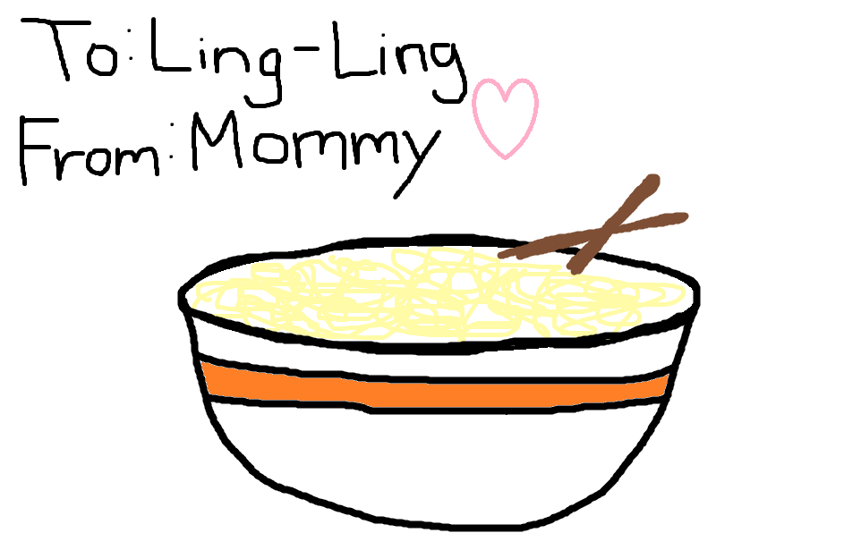
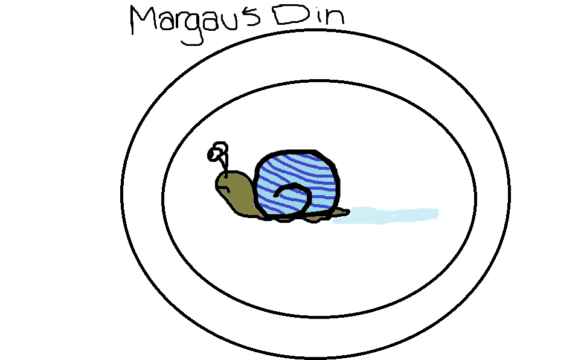
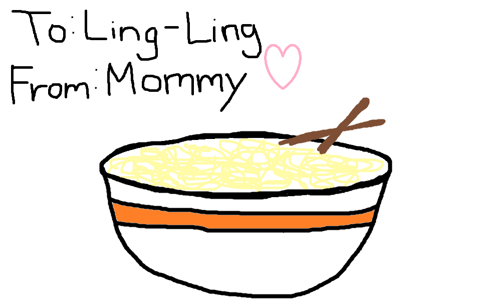
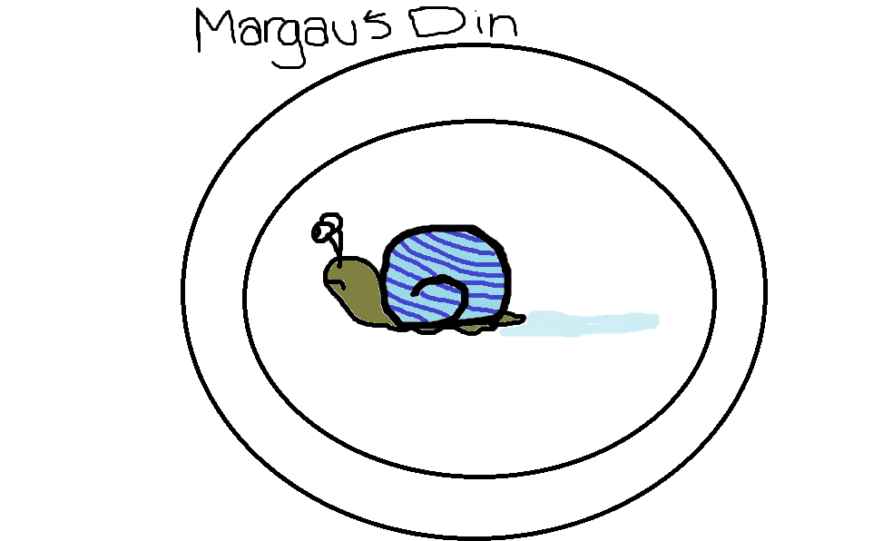
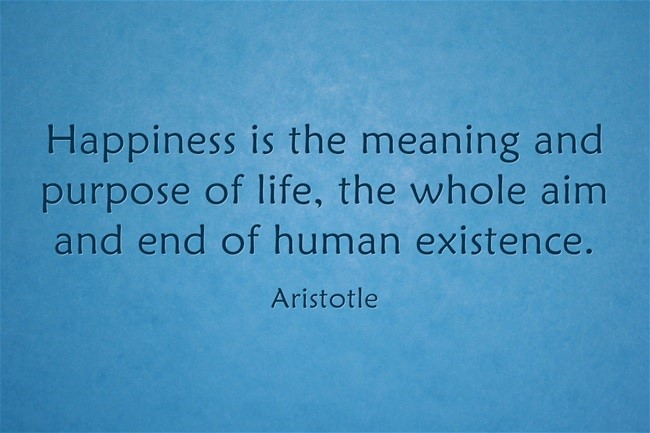
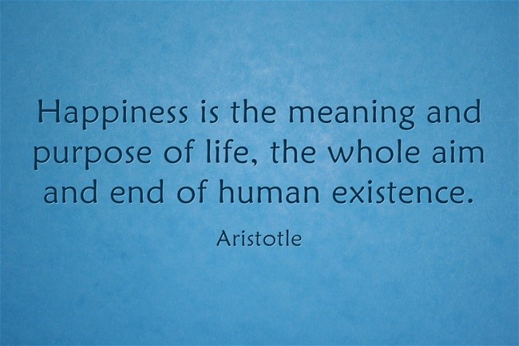

Cherish C. Goldsby
This site will give you all the information you'll want on Cherish Goldsby. From her favorites to her social media accounts, this site can tell you whatever you want to know!
Mini Biography
Cherish C. Goldsby was born on April 6th in the 2000th year of our Lord. Her parents, Kelly and John Goldsby, were happily married until her third grade school year when they separated and her father moved to San Diego, California. Throughout her years in school, Cherish has always shown excellent skill in her academics. For example, in her first year taking Virginia standardized tests (SOL) she recieved a perfect score of 600 on all of the tests. Now she is enrolled in Norview High School as a gifted student in the specialty program called LCSE (Leadership Center for Sciences and Engineering). Her grades aren't exactly as good as she'd like for them to be at the moment but, she is working to get her grades up. Cherish has recently gotten into a relationship with her boyfriend, Tyrique Jenkins, in June of 2016. She is very happy in her relationship and is growing with her parrtner. Overall Cherish is a bright person and student with an extremely bright future.
Favorites!!!
Social Media!!!
Some Friends...
 



 
